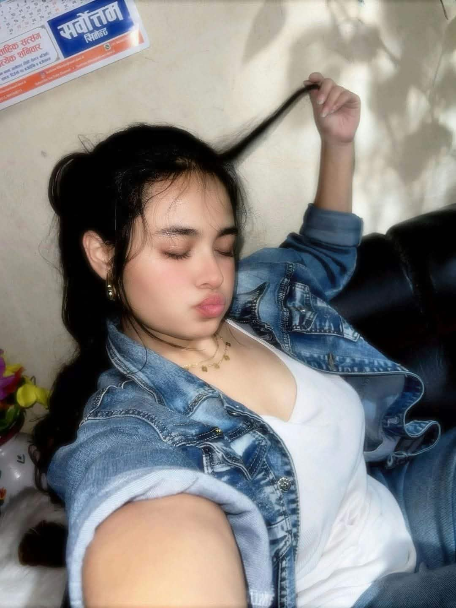

A little reminder for you

A face I'll always treasure ♡
To a Heart as Beautiful as Moonlight
Oh, sweetheart,
You carry a garden within your chest,
Where even the wilting flowers find a place to rest.
You scatter sunshine with the gentlest hands,
Leaving little pieces of warmth wherever you stand.
You've been a shelter beneath someone else's rain,
A quiet comfort through another's pain.
Yet I wonder who notices when your own skies turn grey,
Who reminds you that you deserve tenderness along the way?
Perhaps you've known the ache of giving too much,
Of offering your heart to those who never valued its touch.
Perhaps you've questioned the goodness that lives within,
Wondering if being gentle was where the hurt begins.
But darling, never mistake your tenderness for a flaw,
Nor let another's indifference become the mirror through which you see yourself.
You were never foolish for believing in goodness,
And never less worthy because someone failed to recognise your preciousness.
Even the moon has nights when it barely glows,
Yet never loses the beauty that the night sky knows.
So let yourself rest when the world feels unkind;
You needn't illuminate every darkness you find.
And when the nights become too heavy to bear,
When your thoughts grow louder and hope seems nowhere,
Even in despair, I'll stand beside you,
Not promising to mend every storm, but promising to care.
Bring me your silence, your worries, your rain;
You needn't disguise the things that cause you pain.
You don't have to wear a smile or pretend to be strong;
Even the gentlest hearts deserve somewhere to belong.
And oh, babydoll, you're the sweetest thing I've ever known,
A beautiful soul with a light entirely your own.
Never did I imagine someone could feel so precious,
That simply thinking of them could make the world seem more gracious.
Sometimes I wish life had been a little kinder,
That our paths had crossed a little sooner, a little earlier.
For knowing you has made me realise, in the loveliest way,
How much beauty one person can bring into someone's everyday.
If time were generous enough to grant me one wish,
It would be for more moments that I could cherish.
Not to ask the world to promise us forever,
But to hope that life never makes us strangers to each other.
And perhaps these words will never fully convey
All the different ways I wish to say what I feel today.
I love you in every possible way,
In the quiet, in the chaos, in the words I cannot say.
In your brightest mornings and your most difficult nights,
In the person you are and the dreams within your sight.
So, my miss mamm, keep your heart soft, but let your boundaries grow.
You deserve the same beautiful kindness you so freely bestow.
Never measure your worth by what you give away;
You are precious simply for being you, every single day.
And if the world ever makes you question your place...
I hope these words remind you of your irreplaceable grace.
If life has ever been kind to me in a thousand different ways, meeting a soul like yours is among its loveliest days.
And if I could ask for anything beneath the moonlit sky, it would be that you never forget how wonderful you are.
Even in despair,
I'll stand beside you.
I love you in every possible way.
With all the tenderness in my heart,
Always ♡